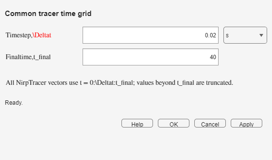

Tracer Flowsheet fixes Δt, tfinal, and the displayed time unit. Every concentration and RTD vector in the model uses the same samples.
Estimate the longest residence time and tail in the network. Select a final time that includes them and a time step small enough for pulses, plug-flow peaks, and sharp input changes.

Convolution may produce a tail after tfinal. Those samples cannot appear in the fixed output vector. The monitor compares the retained and expected areas; when the loss exceeds its threshold, increase tfinal. A default warning near 1% is a practical prompt, not a new normalization.
| Symptom | What to do |
|---|---|
| Narrow peaks look stepped | Reduce Δt. |
| Recovery is low and a lost-area warning appears | Increase tfinal. |
| Blocks report inconsistent vector sizes | Apply the coordinator settings and run the complete model again. |